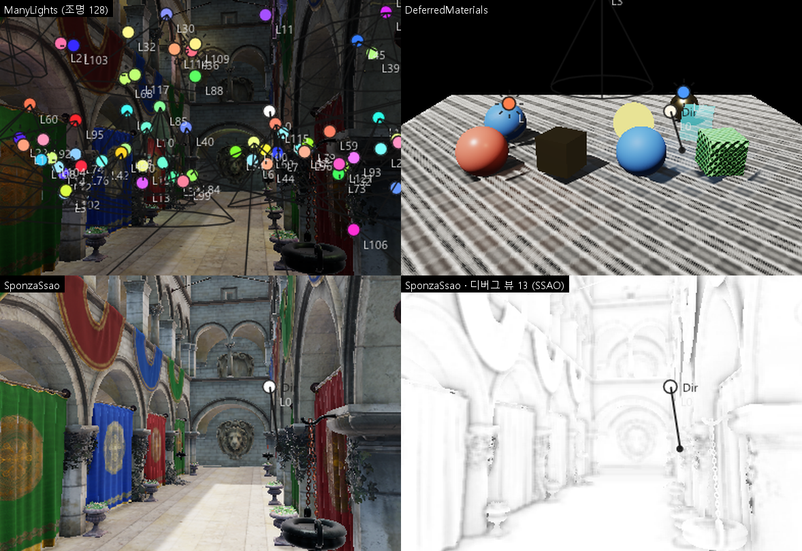
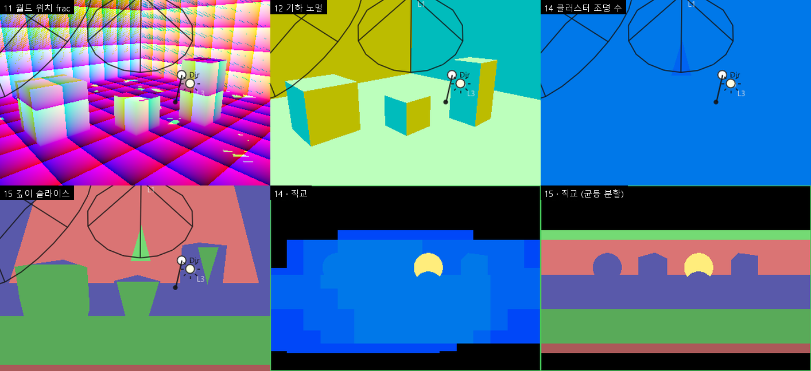

디퍼드 · 클러스터드 라이팅 · SSAO 구현 기록
디퍼드·클러스터드·SSAO 구현 계획의 세 단계(2단계 디퍼드 기본, 3단계 조명 컬링·클러스터드 라이팅, 5단계 SSAO)를 구현하고 검증한 기록입니다. 어느 파일의 어느 함수를 바꿨는지, 구현을 이해하려면 코드를 어떤 순서로 읽으면 되는지, 그 코드가 기대는 개념이 무엇인지를 한 문서에 모았습니다.
상태 (2026-11-18). 세 단계 모두 구현했고 D3D11·D3D12 두 백엔드에서 화면 비교로 검증했습니다. 이전 경로(포워드, 클러스터 없음, 조명 번호 순 그림자)는 실행 인자 셋으로 그대로 되돌릴 수 있고, 그렇게 되돌린 화면은 작업 전 화면과 픽셀 단위로 같습니다 (8.1). 아직 커밋하지 않았습니다. D3D12 GPU 기반 검증(--gpu-validation=1)은 미해결입니다 — 한 번 통과한 뒤 같은 바이너리로 네 번 멈췄습니다 (8.4).
기준: 커밋 3af4066 + 작업 트리. 계획 문서와 다르게 구현한 부분은 해당 절에 계획과 다름 으로 표시했습니다. 코드 위치는 "파일 + 함수/타입 이름"으로 적었고 경로는 SherlockEngine/ 프로젝트 폴더 기준입니다. 숫자는 이 문서를 쓰면서 실제로 실행해서 얻은 값이고, 얻지 못한 것은 8.4 에 따로 적었습니다.
검증 씬은 기존 Crytek Sponza(Projects/SherlockTestScenes/Assets/Models/Sponza) 위에 만들었습니다. 메모에 적어 둔 Intel Sponza 는 내려받지 않았습니다 (파일 다운로드는 사용자 확인이 필요해서). 조명 128 개라는 구성은 그대로 따랐습니다.
0. 한눈에 보기
| 단계 | 무엇을 했나 | 켜고 끄기 | 핵심 파일 |
|---|---|---|---|
| 2 · 디퍼드 | G-buffer 패스(MRT 5장) → 풀스크린 라이팅 → 포워드 패스(G-buffer 에 못 담는 재질·하늘·블렌딩). 위치는 저장하지 않고 깊이에서 복원, 노멀 둘은 옥타헤드럴로 FP16 한 장에. 포워드 PS 와 같은 재질·조명 함수를 셰이더 헤더로 나눠 두 경로가 함께 씀. | Render Settings Deferred · --deferred=1|0 (기본 켬) | Graphics/RendererDeferred.cpp, Shaders/GBuffer.hlsli, GBufferPixelShader.hlsl, DeferredLightingPixelShader.hlsl, Shading.hlsli, MaterialSurface.hlsli |
| 3a · 조명 컬링·그림자 우선순위 | 조명마다 경계 구를 만들고 메인 카메라 절두체로 거름. 그림자를 드리우는 지역광은 "화면에서 차지하는 정도 × 밝기" 점수 순으로 아틀라스 타일 16 장을 받음 (지난 프레임에 받은 조명은 가산점). | Shadow priority · --shadow-priority=1|0 (기본 켬) | Graphics/RendererClusters.cpp (CullLights), RendererShadow.cpp (BuildShadowViews) |
| 3b · 클러스터드 라이팅 | 화면 16×9 타일 × 깊이 24 슬라이스 = 3,456 상자. CPU 가 상자마다 겹치는 지역광 목록을 만들어 구조체 버퍼 두 개(t30·t31)로 올리고, 포워드·디퍼드 셰이더가 픽셀의 상자 목록만 돎. 방향광은 앞으로 모아 항상 전부 돎. | Clustered lights · --clustered=1|0 (기본 켬) | Graphics/RendererClusters.cpp (BuildClusters), Shaders/Clusters.hlsli |
| 5 · SSAO | 깊이·G-buffer 노멀로 반구 샘플 16 개(기본) → R8 → 4×4 깊이 가중 블러 → 라이팅이 환경광에만 곱함 (재질 AO 와 min 또는 곱). 디퍼드 프레임에서만. | 씬 환경 SSAO (씬 파일에 저장) · --ssao=1|0 로 덮어쓰기 | Graphics/RendererSsao.cpp, Shaders/Ssao.hlsli, SsaoPixelShader.hlsl, SsaoBlurPixelShader.hlsl |
RHI 는 고치지 않았습니다. 계획대로 세 단계 모두 지금 RHI(MRT, 읽기 전용 깊이, 구조체 버퍼, Dynamic 버퍼, 바인딩 셋)만으로 올라갔습니다. 디버그 뷰는 11~15 다섯 개를 더했습니다: 11 월드 위치(frac), 12 기하 노멀, 13 SSAO, 14 클러스터 조명 수, 15 깊이 슬라이스.

ManyLights.json 조명 128 개 (색 점은 에디터 조명 아이콘. 조명 범위·세기를 키우기 전에 찍은 것), 오른쪽 위 DeferredMaterials.json 디퍼드·포워드 재질 혼합, 아래 SponzaSsao.json 과 그 SSAO 디버그 뷰.1. 프레임 흐름
Renderer::Render 한 번의 순서입니다. 굵은 글씨가 이번에 생긴 것입니다. 메인 뷰와 카메라 미리보기 뷰는 같은 RenderScenePass 를 타고, 뷰마다 b0 과 클러스터 버퍼만 다시 올립니다.
RenderDeferredScene 이 그리는 네 패스입니다.디퍼드 프레임이 끝났을 때 view.hdr 는 RenderTarget, 깊이는 DepthWrite 상태라서 포워드 경로가 끝났을 때와 같습니다. 그래서 그 뒤의 파티클·디버그 선 패스(RenderScenePass 의 두 번째 부분)는 한 줄도 바꾸지 않았습니다.
2.1 디퍼드 셰이딩과 G-buffer
포워드는 물체를 그리면서 그 픽셀의 조명을 바로 계산합니다. 같은 픽셀을 여러 물체가 덮으면(오버드로) 가려질 픽셀까지 조명을 다 계산하고, 조명 수가 늘면 그 비용이 물체 수 × 조명 수로 커집니다. 디퍼드는 두 번에 나눕니다. 첫 패스(G-buffer 패스)는 조명 없이 "이 픽셀에 보이는 표면이 무엇인가"만 여러 장의 텍스처에 적고, 둘째 패스(라이팅 패스)는 화면을 덮는 삼각형 하나로 픽셀마다 한 번만 조명을 계산합니다. 보이는 표면에만 조명을 계산하므로 오버드로 비용이 사라집니다.
G-buffer 는 라이팅 패스가 표면을 되살리는 데 필요한 값을 담습니다. 이 엔진의 배치(Shaders/GBuffer.hlsli 머리 주석, C++ 은 RendererDeferred.cpp 의 kGBufferFormats):
| 출력 | 텍스처 | 포맷 | 내용 | 왜 이 포맷 |
|---|---|---|---|---|
| SV_Target0 | view.hdr | R16G16B16A16_FLOAT | rgb 발광, a 기본색 알파 | 발광은 1 을 넘음. 라이팅이 이 위에 가산하므로 HDR 타깃을 그대로 씀 — 별도 발광 텍스처가 필요 없음 |
| SV_Target1 | GB0 | R8G8B8A8_UNORM_SRGB | rgb albedo, a 재질 AO | albedo 는 원래 sRGB 텍스처에서 옴. sRGB 저장은 어두운 값에 단계를 더 줌 |
| SV_Target2 | GB1 | R16G16B16A16_FLOAT | xy 셰이딩 노멀, zw 기하 노멀 (옥타헤드럴) | 노멀은 8비트면 띠가 보임. 기하 노멀은 그림자 노멀 오프셋·노말맵 그림자 이동이 씀 |
| SV_Target3 | GB2 | R8G8B8A8_UNORM_SRGB | rgb 유효 F0, a 거칠기 | 비금속 F0 ≈ 0.04 같은 작은 값을 sRGB 가 잘 담음. 알파는 sRGB 변환을 안 함 |
| SV_Target4 | GB3 | R8G8B8A8_UNORM | r 금속성, g F90, b 클리어코트, a 코팅 거칠기 | 선형 0..1 값 |
| (깊이) | view.depth | D24S8 | 위치 복원의 입력 | 이미 있던 깊이를 그대로 SRV 로 읽음 (DepthRead) |
픽셀당 28 바이트 + 깊이입니다. SurfaceData 의 모든 칸이 G-buffer 에 들어가지는 않습니다. 저장하지 않는 것과 그 대신 쓰는 값:
- 투과: 칸이 없음 → 투과 재질은 포워드로 (
Renderer::CanUseDeferred). 지금 규칙에서는IsBlended가 투과 재질을 이미 블렌딩으로 분류하므로 이 검사는 방어용입니다. - 코팅 노멀: 세 번째 노멀 칸이 없음 → 코팅 노멀 = 기하 노멀로 가정 (
LoadGBufferSurface). 그 가정이 틀리는 재질, 즉 코팅 노멀 맵이 있는 재질은 포워드로. - unlit·블렌딩: 조명을 안 받거나(unlit), 한 픽셀에 표면이 여럿 겹침(블렌딩) → 포워드로.
- 발광: G-buffer 패스가
view.hdr에 바로 씀. 라이팅 패스의SurfaceData.emission은 0.
디퍼드에서 포워드 패스가 남는 이유. G-buffer 는 픽셀마다 표면 하나만 담습니다. 유리처럼 뒤가 비치는 표면은 담을 수 없고, 담을 칸이 없는 재질도 있습니다. 그래서 디퍼드 프레임에도 포워드 패스가 하나 남아, 디퍼드로 못 간 불투명 → 하늘 → 블렌딩(먼 것부터)을 그립니다. 이 패스는 G-buffer 패스가 채운 깊이를 그대로 써서 깊이 테스트를 합니다.
2.2 깊이에서 위치 복원
포워드 PS 는 정점 셰이더가 보간해 준 월드 위치를 받습니다. 라이팅 패스는 화면을 덮는 삼각형 하나라 그런 값이 없습니다. 위치 텍스처(FP32 × 3)를 따로 두는 대신, 깊이 버퍼와 픽셀 좌표로 위치를 되돌립니다.
// Shaders/Common.hlsli — ReconstructWorldPosition
uv = pixel * screenParams.zw; // 픽셀 → 0..1 (v 아래로)
ndc = float4(uv.x * 2 - 1, 1 - uv.y * 2, depth, 1); // 클립 공간 (w = 1 로 둔 점)
world = mul(ndc, invViewProj); // viewProj 의 역행렬 (C++ 이 b0 에 올림)
return world.xyz / world.w; // 원근 나눗셈을 되돌림원리: 정점은 clip = world · viewProj, 화면은 ndc = clip / clip.w 입니다. ndc 의 x·y 는 픽셀 위치에서, z 는 깊이 버퍼에서 알 수 있으므로 (ndc, 1) · viewProj⁻¹ 을 하면 world / clip.w 에 비례하는 4 차원 점이 나오고, 그 w 로 나누면 월드 위치가 됩니다. 원근·직교 모두 같은 식입니다 (직교는 w 가 1).
클러스터 슬라이스와 SSAO 는 월드 위치가 아니라 뷰 공간 z 가 필요해서 더 싼 식을 따로 둡니다 (ViewDepthFromDevice). LH 투영에서 깊이 값은 원근 d = (P22·z + P32) / z, 직교 d = P22·z + P32 이므로 거꾸로 풀면:
원근: z = P32 / (d − P22) 직교: z = (d − P32) / P22 // proj[2][3] = 1 이면 원근SSAO 는 뷰 공간 위치 전체가 필요해서 ViewPositionFromDevice 가 x·y 도 투영을 되돌려 구합니다 (원근 x = (x_ndc − P20)·z / P00, 직교 x = (x_ndc − P30) / P00).
정밀도. D24 깊이는 24 비트라 복원한 위치는 보간 위치와 아주 조금 다릅니다 (거리 10 m, near 0.1 에서 대략 0.1 mm 단위). 대부분의 셰이딩에는 보이지 않지만, 그림자 비교처럼 문턱값에 걸린 판정은 뒤집힐 수 있습니다. 측정 결과는 8.1 에 있습니다.
HLSL 의 행렬 첨자: C++ 은 행 벡터 행렬을 전치해서 올리고 셰이더는 column_major 로 읽으므로, HLSL proj[r][c] 가 C++ M(r, c) 와 같습니다. 그래서 위 식의 P22 는 proj[2][2], P32 는 proj[3][2] 입니다.
2.3 옥타헤드럴 노멀 인코딩
단위 벡터는 자유도가 2 라서 두 값으로 저장할 수 있습니다. 구면 좌표(각도 두 개)는 삼각함수가 들고 극 근처에 값이 몰립니다. 옥타헤드럴 인코딩은:
- 벡터를
|x| + |y| + |z|로 나눠 팔면체 표면으로 옮깁니다 (L1 정규화). - 위 반구(z ≥ 0)는 xy 를 그대로 씁니다 — 정사각형 안쪽 마름모가 됩니다.
- 아래 반구(z < 0)의 네 삼각형은 정사각형의 네 귀퉁이로 접습니다 (
OctWrap:(1 − |yx|) · sign(xy)).
결과는 [−1, 1]² 의 두 값이고 방향이 고르게 퍼집니다. GB1 하나(FP16 × 4)에 셰이딩 노멀과 기하 노멀을 함께 넣을 수 있었던 이유입니다. 코드: Shaders/Common.hlsli 의 OctWrap·EncodeOct·DecodeOct.
fxc 함정. SM 5.0 컴파일러(fxc)에는 select() 가 없습니다. 부호 고르기는 성분별 삼항 연산 (v >= 0.0f ? 1.0f : -1.0f) 로 썼습니다 (벡터에 쓰면 성분마다 따로 고름).
정밀도 실험: GB1 을 FP32 (R32G32B32A32_FLOAT)로 바꿔도 포워드 대비 차이 픽셀 수가 그대로였습니다 (75 → 75). 노멀 정밀도는 두 경로 차이의 원인이 아닙니다. FP16 으로 되돌렸습니다.
2.5 조명 경계 구
컬링과 비닝은 "이 조명이 이 영역에 빛을 줄 수 있는가"를 빨리 판정해야 합니다. 판정용 모양으로 구를 씁니다 (Renderer::ComputeLightBounds, xyz 중심 + w 반지름).
- 포인트: 중심 = 조명 위치, 반지름 =
range. - 스팟: 빛이 닿는 영역은 "반각 θ, 높이 range 인 원뿔"과 "반지름 range 인 구"의 교집합입니다. 이것을 담는 작은 구:
- θ ≤ 45°: 원뿔 꼭짓점과 밑면 원을 모두 지나는 구. 중심 = 꼭짓점 + 방향 · h / (2cosθ), 반지름 = h / (2cosθ).
- θ > 45°: 밑면 원을 적도로 하는 구. 중심 = 꼭짓점 + 방향 · h·cosθ, 반지름 = h·sinθ.
- θ ≥ 90° (원뿔이 반구보다 넓음): 포인트처럼 (꼭짓점, range).
- 방향광: 무한 (w = −1). 컬링·비닝 대상이 아니고, 셰이더가 항상 전부 돎.
보수적이어야 결과가 같다. 감쇠 함수 CalculateDistanceAttenuation 은 saturate(1 − d / range)² 를 곱하므로 range 밖에서 정확히 0 입니다. 스팟의 원뿔 밖도 정확히 0 입니다. 경계 구가 빛이 닿는 영역을 빠짐없이 덮으면, 목록에서 빠진 조명은 원래도 0 을 더했을 조명입니다. 0 을 더하는 것과 안 더하는 것은 부동소수점에서도 같으므로 클러스터 켬/끔이 비트 단위로 같아집니다. 구가 조금 커서 필요 없는 조명이 들어가는 것은 성능만 손해이고 결과는 같습니다.
2.6 클러스터 격자와 로그 슬라이스
클러스터드 라이팅은 화면을 3 차원 격자로 나누고, 상자마다 "이 상자와 겹치는 조명 목록"을 미리 만들어 둡니다. 픽셀은 자기가 속한 상자의 목록만 돕니다.
- 화면 방향: 16 × 9 타일 (16:9 화면에서 타일이 대략 정사각형). 타일 크기는 화면 크기에 비례 — 해상도가 바뀌어도 상자 수가 같습니다.
- 깊이 방향: 24 슬라이스. 원근 카메라는 로그 분할: 가까운 쪽 슬라이스는 얇고 먼 쪽은 두껍습니다. 원근에서 같은 크기의 물체가 멀수록 작게 보이므로, 화면에서 본 상자 모양이 깊이와 상관없이 비슷해집니다.
- 번호:
cluster = x + 16 · (y + 9 · z). y 는 화면 위에서 아래로 (SV_Position방향).
슬라이스 식 (셰이더 ClusterSlice, C++ SliceOf·ClusterDepthParams 가 같은 식):
slice = floor( f(z) · scale + bias ), 0..23 으로 자름
원근: f = log2, scale = S / log2(f/n), bias = −S · log2(n) / log2(f/n) // z = n → 0, z = far → S
직교: f = 항등, scale = S / (far − n), bias = −n · S / (far − n) // 균등 분할scale·bias 는 C++ 이 뷰마다 b0 의 clusterDepth 에 올리고, 원근 여부는 clusterParams.y 입니다. 셰이더는 곱셈 하나, 덧셈 하나, log2 하나로 슬라이스를 구합니다.
C++ 비닝은 반대로 슬라이스 경계 z 가 필요합니다: 원근 z_k = n · (far/n)^(k/S), 직교 z_k = n + (far − n) · k/S.

MultiShadow.json 의 11 (월드 위치 frac — 복원 위치가 맞으면 정수 격자가 보임), 12 (기하 노멀), 14 (상자당 지역광 수: 검정 0 → 파랑 → 초록 → 빨강, 32 이상 흰색. 이 씬은 지역광 3 개가 방을 거의 다 덮어 대부분 3), 15 (슬라이스 색띠). 아래: OrthoLights.json 재생 모드 직교 카메라의 14·15 — 직교는 균등 분할이라 띠 간격이 일정합니다.2.7 비닝 — 상자와 조명 짝짓기 (Renderer::BuildClusters)
- 상자 3,456 개를 뷰 공간 AABB 로. 타일의 NDC 사각형 네 귀퉁이를 슬라이스 앞·뒤 z 에서 뷰 공간으로 되돌린 점 8 개를 감쌉니다. 원근
x = (x_ndc − P20) · z / P00, 직교x = (x_ndc − P30) / P00(y 도 같은 꼴). 원근 상자는 실제로는 잘린 각뿔이라 AABB 가 조금 크지만, 보수적이므로 결과는 같습니다. - 지역광마다 범위를 좁힘. 경계 구를 뷰 공간으로 옮기고, 깊이 범위 → 슬라이스 범위 k0..k1, 구를 감싼 상자의 꼭짓점 8 개를 투영 → 타일 범위 x0..x1, y0..y1. 원근에서 구가 near 평면에 걸치면(투영이 뒤집힘) 화면 전체 타일로 둡니다.
- 정밀 검사. 범위 안의 상자마다 구-AABB 겹침 검사: 상자 안에서 구 중심에 가장 가까운 점까지 거리² ≤ r². 통과하면 (상자, 조명) 쌍을 쌓습니다.
- 압축. 상자마다 개수를 세고(1 차) → 누적합으로 시작 위치를 정하고 → 쌍을 순서대로 채움(2 차). 결과는
grid[cluster] = (시작, 개수)와 하나로 이어 붙인 조명 번호 목록입니다. 조명을 번호 순으로 돌았으므로 상자 안 목록은 오름차순입니다.
// 셰이더 쪽 (Shading.hlsli — ShadeClusteredLights)
for (i = 0; i < min(directionalCount, lightCount); ++i) color += ShadeLight(s, lights[i], …); // 방향광은 앞쪽에 모여 있음
uint2 cell = clusterGrid[ClusterIndex(pixel, viewZ)]; // t30: (시작, 개수)
for (j = 0; j < cell.y; ++j) color += ShadeLight(s, lights[clusterLightIndices[cell.x + j]], …); // t31목록 버퍼(t31)는 처음 16,384 칸이고 모자라면 두 배씩 키웁니다 (상한 262,144). 상한을 넘는 쌍은 버리고 Stats::clusterOverflow 에 셉니다 — 지금 테스트 씬에서는 모두 0 입니다.
2.8 그림자 타일 우선순위 (3a, Renderer::CullLights)
지역광 그림자는 2048² 아틀라스의 512² 타일 16 장을 나눠 씁니다. 스팟은 1 장, 포인트는 큐브 6 면이라 연속 6 장입니다. 그림자를 드리우는 조명이 많으면 누군가는 못 받습니다. 예전에는 조명 번호 순으로 받아서, 화면 밖 조명이 타일을 차지하고 눈앞의 조명이 그림자를 못 받는 일이 생겼습니다.
- 절두체 컬링: 경계 구가 메인 카메라 절두체 밖이면 그 조명은 이 프레임 화면에 빛을 주지 않습니다 (
m_lightVisible= 0). 그림자 후보에서 빠집니다. - 점수:
score = (r / D)² × intensity × luminance(color). r 은 경계 구 반지름, D 는 카메라와 구 중심의 거리 (카메라가 구 안이면 D = r 로 두어 1). (r/D)² 은 구가 화면에서 차지하는 입체각에 비례하는 근사입니다. - 히스테리시스: 지난 프레임에 그림자를 받은 조명은 점수 × 1.25. 점수가 비슷한 두 조명이 프레임마다 자리를 바꾸면 그림자가 깜빡이기 때문입니다. 기록 키는 씬 조명 번호입니다 (6장).
- 정렬과 배정: 점수 내림차순(같으면 번호 순 — 결정적).
BuildShadowViews가 방향광(CSM) 다음에 이 순서로 타일을 나눠 줍니다. 포인트 6 장이 안 남으면 그 조명은 건너뛰고 다음 후보를 봅니다 (스팟 1 장은 남았을 수 있음).
결과 (8.2): 3a 를 끄면 ManyLights 씬에서 16 장 중 6~12 장이 화면 밖 조명에 갔고, 켜면 0 장입니다.
2.9 SSAO (Screen-Space Ambient Occlusion)
앰비언트 오클루전은 "주변 물체가 하늘빛(환경광)을 얼마나 가리는가"입니다. 구석·접촉면·주름은 하늘이 덜 보여 어둡습니다. 정확히는 반구 전체로 광선을 쏴야 하지만, SSAO 는 깊이 버퍼를 장면의 근사로 써서 화면 공간에서 추정합니다.
- 반구 세우기: 픽셀의 뷰 공간 위치 P 와 노멀 N (GB1 의 셰이딩 노멀을 뷰 공간으로 회전).
- 커널: 탄젠트 공간 반구 안의 점 16 개 (기본, 최대 32). C++
UploadSsaoConstants가 시드 1337 로 만듦 — 방향은 x, y ∈ [−1,1], z ∈ [0,1] 을 정규화, 길이는 층화한lerp(0.2, 1, (i + u) / n)(u 는 [0, 1) 난수) — 샘플 i 의 길이가 반경의 [i/n, (i+1)/n) 칸에 하나씩 들어가 0.2 ~ 1 사이에 고르게 퍼집니다 (평균 약 0.6 × 반경). 길이가 반경 방향으로 고르면 부피 밀도는 1/r² 이라 중심 가까이에 샘플이 저절로 더 몰립니다 — 가까운 가림에 무게가 실리면서도 반경 끝까지 닿습니다. - 고친 이력: 처음에는 흔한 예제 식 "난수 × lerp(0.1, 1, (i/n)²)" 를 썼습니다. 난수와 제곱으로 두 번 몰려 평균 길이가 반경의 약 16% 라서, 반경 0.6 에서 실제로는 0.1 m 안만 보았습니다. 쌓인 구 사이 틈처럼 가림 물체가 0.2~0.5 m 떨어진 곳이 거의 가려지지 않아 윤곽에 얇은 띠만 생겼습니다 (
SsaoBalls.json에서 발견). 층화 선형 식으로 바꾼 뒤 같은 반경에서 틈과 바닥 둘레가 어두워집니다. - 회전: 샘플이 적으면 모든 픽셀이 같은 방향을 보아 띠가 생깁니다. 픽셀마다 커널을 노멀 축으로 다른 각도만큼 돌립니다. 각도는 4×4 베이어 행렬에서 가져옵니다 (난수 텍스처 대신 상수 — 결정적).
- 비교: 점을 투영해 그 화면 위치의 장면 깊이와 비교. 장면 z ≤ 점 z − bias 이면 그 방향은 가려짐. 반경보다 훨씬 앞의 물체(배경 앞을 지나는 기둥)는
smoothstep(0, 1, radius / |P.z − sceneZ|)로 줄입니다 (범위 검사). - AO =
pow(saturate(1 − 가려진 비율 × intensity), power), R8_UNORM. - 블러: 4×4 상자 블러 — 베이어 주기(4)와 같아 무늬가 한 번에 평균됩니다. 깊이가 거리의 5 % + bias 이상 다른 이웃은 빼서 물체 경계를 넘어 번지지 않게 합니다 (간단한 양방향 필터).
- 적용: 라이팅 PS 가
ao = min(재질 AO, SSAO)(기본) 또는 곱으로 합쳐 환경광에만 곱합니다. 직접광의 가림은 그림자 맵이 맡습니다. min 이 기본인 이유: 재질 AO 텍스처도 같은 가림을 이미 담고 있어서, 곱하면 같은 가림을 두 번 셉니다.
디퍼드 프레임에서만 돕니다. 깊이가 G-buffer 패스에서 다 채워진 뒤여야 하고 노멀이 필요해서입니다. 포워드 프레임에는 그 시점에 깊이가 없습니다 (깊이 프리패스를 두지 않았음).

SsaoBalls.json (반경 0.8, 세기 1.0, 샘플 16, 고친 커널). 왼쪽 SSAO 끔, 가운데 켬, 오른쪽 디버그 뷰 13 (AO 값 자체 — 흰색 1, 검정 0). 구끼리 닿는 틈, 구와 바닥이 닿는 둘레, 벽 두 장이 만나는 모서리와 바닥 경계가 어두워집니다. 맨 윗구의 위쪽처럼 열린 면은 1 그대로입니다. Sponza 는 햇빛이 강해 환경광 비중이 작아서 차이가 잘 안 보이므로, 이 씬은 IBL 을 주 조명으로 두고 방향광을 0.35 로 낮췄습니다.3. 바뀐 파일과 함수
새 파일은 새 파일, 고친 파일은 고침 으로 표시했습니다. 함수 이름은 그 파일 안의 이름입니다.
3.1 셰이더 (Shaders/)
| 파일 | 함수·선언 | 무엇을 |
|---|---|---|
Shading.hlsli 새 파일 | struct SurfaceData, ShadeLight, ShadeAllLights, ShadeClusteredLights, ShadeLights, ShadeEnvironment, DiffuseAlbedo, SurfaceDebugColor, ClusterDebugColor, ViewDepthFromWorld + BasicPS 에서 그대로 옮긴 그림자·GGX·프레넬·IBL 함수 (ShadowForLight, SampleShadowView, EnvironmentLighting 등) | 표면 → 색. 포워드·디퍼드 공용. 셋 선언 없음. ShadeLights 가 b0 clusterParams.x 로 전체 순회와 클러스터 목록 중 고름 |
MaterialSurface.hlsli 새 파일 | MaterialBaseColor, EvaluateMaterialSurface | 재질 셋 + 정점 보간값 → SurfaceData. 예전 BasicPS 의 재질 계산 그대로 (노말맵, 클리어코트, 투과, 스페큘러 확장) |
BasicPixelShader.hlsl 고침 | PS_Main | 위 두 헤더를 부르는 얇은 셰이더로. 디버그 뷰 5(UV)만 직접, 나머지는 SurfaceDebugColor·ClusterDebugColor |
Clusters.hlsli 새 파일 | clusterGrid (t30), clusterLightIndices (t31), ClusterSlice, ClusterIndex, CLUSTER_X/Y/Z | 픽셀 + 뷰 z → 상자 번호 |
GBuffer.hlsli 새 파일 | gbufferDepth (t23), gbuffer0~3 (t25~t28), ssaoTexture (t29), LoadGBufferSurface | G-buffer 셋 선언과 한 픽셀 → SurfaceData |
GBufferPixelShader.hlsl 새 파일 | PS_GBuffer, struct GBufferOutput | MRT 5장 출력. 디버그 뷰가 켜져 있으면 발광 0 |
DeferredLightingPixelShader.hlsl 새 파일 | PS_DeferredLighting | 깊이 1 은 버림 → 위치 복원 → LoadGBufferSurface → SSAO 합치기 → 디버그 뷰 → ShadeLights(ShadeEnvironment(...)). 알파 0 출력 |
Ssao.hlsli 새 파일 | cbuffer SsaoParams (b12), ssaoDepth (t23), ssaoNormals (t26), ssaoInput (t29), LoadSsaoDepth | SSAO 셋 선언. cbuffer 이름은 C++ kConstantBuffers 의 "SsaoParams" 와 같아야 함 (Debug 빌드 리플렉션 대조) |
SsaoPixelShader.hlsl 새 파일 | PS_Ssao, BAYER4 | 반구 샘플 → R8 |
SsaoBlurPixelShader.hlsl 새 파일 | PS_SsaoBlur | 4×4 깊이 가중 블러 |
Common.hlsli 고침 | b0 에 invViewProj, screenParams, clusterParams, clusterDepth, aoParams (432 바이트). ViewDepthFromDevice, OctWrap·EncodeOct·DecodeOct, ReconstructWorldPosition, ViewPositionFromDevice | 라이팅과 SSAO 가 함께 쓰는 복원·인코딩 함수 계획과 다름 계획은 GBuffer.hlsli 였으나 SSAO 도 써서 옮김 |
Lighting.hlsli 고침 | b2 Lights 에 directionalCount (32 바이트) | 앞쪽 방향광 개수 |
3.2 렌더러 C++ (Graphics/, Scene/)
| 파일 | 클래스·함수 | 무엇을 |
|---|---|---|
ShaderConstants.h 고침 | PerFrameConstants (432 B), LightConstants (32 B), SsaoConstants (544 B), 슬롯 kSRVSlotGBuffer0~3 (25~28), kSRVSlotSsao (29), kSRVSlotClusterGrid (30), kSRVSlotClusterLights (31), kCBSlotSsao (12), kClusterGridX/Y/Z, kClusterCount, kMaxSsaoSamples | HLSL 과 바이트 단위로 같은 배치. 각 오프셋은 static_assert |
Scene/SsaoSettings.h 새 파일 | struct SsaoSettings | enabled, radius, bias, intensity, power, sampleCount, multiply. SceneEnvironment::ssao 로 씬 파일에 저장 |
Scene/Scene.h 고침 | SceneEnvironment | SsaoSettings ssao 추가 |
Renderer.h 고침 | RenderSettings | deferred, clustered, shadowPriority (기본 모두 true), ssaoOverride (−1 씬 값) |
Renderer::Stats, ViewTarget, DrawItem, ShaderId·LayoutId·PassId, DrawMode, 새 멤버 | Stats: deferredPath, ssao, gbufferDraws, forwardOpaqueDraws, lightsVisible, lightsCulled, clusterLightRefs, clusterMaxLights, clusterOverflow, shadowViewsOffscreen. ViewTarget: gbuffer[4], gbufferSet, ssaoRaw·ssaoBlur, ssaoSet·ssaoBlurSet. DrawItem: deferred, gbufferPipeline. ShadowView::lightIndex 는 이제 씬 조명 번호 | |
Renderer.cpp 고침 | kShaders·kPasses·kConstantBuffers 표 | 셰이더 4개, 패스 5개 (GBuffer, GBufferSkin, DeferredLight, Ssao, SsaoBlur), cbuffer "SsaoParams" |
Initialize | m_ssaoCB, m_clusterGridBuffer (Dynamic SRV, 3456 × 8 B), m_clusterIndexBuffer (16,384 × 4 B) 생성, 시작 PSO 검사에 G-buffer·라이팅·SSAO PSO | |
CreateLayouts | 프레임 레이아웃에 t30·t31, Layout_GBuffer, Layout_Ssao | |
BuildPassDescs | 풀스크린 세 패스의 래스터·깊이·블렌드 (라이팅: One/One, 알파 Zero/One). 새 PSO 캐시 비우기 | |
Render | SSAO 설정 복사, CullLights, 두 뷰 BuildClusters → EnsureClusterCapacity → UploadClusters(0), UploadSsaoConstants, 미리보기 앞 UploadClusters(1) | |
BuildGpuLights | 방향광 먼저, 그다음 지역광 (같은 종류 안은 씬 순서). m_lightSceneIndex 채움 | |
UploadLights, UploadPerFrameConstants | b2 directionalCount. b0 새 칸 — 시그니처에 뷰 크기와 SSAO 유무 추가 | |
BuildDrawList | CanUseDeferred 이면 GetGBufferPipelineFor 로 G-buffer PSO 도 만들어 둠 (디퍼드를 꺼도 — 토글할 때 목록을 다시 만들지 않으려고) | |
RenderScenePass, DrawItems(…, DrawMode) | UseDeferred 면 RenderDeferredScene. DrawItems 는 All / GBuffer / ForwardRest 모드로 맡은 항목만 그림 (컬링 통계도 맡은 것만) | |
RendererDeferred.cpp 새 파일 | CanUseDeferred, UseDeferred, CreateGBuffer, DestroyGBuffer, RenderDeferredScene, GetGBufferPipelineFor, GetDeferredLightPipeline | G-buffer 생성과 디퍼드 네 패스 |
RendererClusters.cpp 새 파일 | ComputeLightBounds, ClusterDepthParams, CullLights, BuildClusters, EnsureClusterCapacity, UploadClusters | 3a·3b 의 CPU 쪽 전부 |
RendererSsao.cpp 새 파일 | CreateSsaoTargets, DestroySsaoTargets, UploadSsaoConstants, RenderSsao, GetSsaoPipeline | SSAO 타깃·커널·두 패스 |
RendererShadow.cpp 고침 | BuildShadowViews | 타일 배정 순서 = 방향광 → (3a 면) m_shadowOrder, (아니면) 번호 순. 끝에서 히스테리시스 기록, 그림자 뷰의 lightIndex 를 씬 번호로, shadowViewsOffscreen 셈 |
RendererTargets.cpp 고침 | CreateViewTarget, DestroyViewTarget | 깊이 다음에 CreateGBuffer (안에서 CreateSsaoTargets), 깊이 전에 DestroyGBuffer. 실패해도 뷰는 유효 — 그 뷰는 포워드 |
3.3 에디터 · 직렬화 · 실행 인자
| 파일 | 함수 | 무엇을 |
|---|---|---|
App/AppBase.h/.cpp 고침 | AppBase::ApplyRenderPathOptions | --deferred, --clustered, --shadow-priority, --ssao → RenderSettings. 에디터 EditorApp::ParseAutomation 과 게임 GameApp::OnInitialize 가 부름 |
Editor/EditorAutomation.h/.cpp 고침 | EditorApp::RunAutomation | 인자 설명 추가. 종료 프레임에 렌더 통계와 프로파일러 구간을 로그로 (자동 검증: 렌더 통계 …, 자동 검증: 구간 ms …) |
Editor/DebugUI.cpp 고침 | DrawRenderSettingsPanel, DrawEnvironmentPanel | Deferred · Clustered lights · Shadow priority 체크박스와 통계 한 줄. 환경 패널에 SSAO 절 |
Editor/Editor.cpp 고침 | Editor::DrawRenderSettings | 디버그 뷰 콤보에 11~15 |
Scene/SceneSerializer.cpp 고침 | EnvironmentToJson, ApplyEnvironment | environment.ssao 읽기·쓰기. 키가 없는 예전 씬은 꺼진 기본값 |
SherlockEngine.vcxproj(.filters) 고침 | — | 새 cpp 3개, 헤더, hlsli 5개, PS 4개 (FxCompile Pixel 5.0) |
4. 코드 읽는 순서
위에서 아래로 읽으면 "데이터가 어디서 만들어져 어디서 쓰이는가"를 한 번씩만 따라갑니다. 각 단계 끝의 질문에 답할 수 있으면 다음으로 넘어가면 됩니다.
- 설정과 진입점 —
Graphics/Renderer.h의RenderSettings(deferred·clustered·shadowPriority·ssaoOverride),Scene/SsaoSettings.h,App/AppBase.cpp의ApplyRenderPathOptions.
질문: 어떤 값이 씬 파일에 저장되고 어떤 값이 실행 중 스위치인가? - 상수 배치 —
Graphics/ShaderConstants.h의PerFrameConstants·LightConstants·SsaoConstants와 슬롯 상수, 짝이 되는Shaders/Common.hlsli의cbuffer PerFrame.
질문:clusterParams네 칸과aoParams두 칸은 각각 무엇인가? - 공유 셰이딩 —
Shaders/Shading.hlsli를SurfaceData→ShadeLight→ShadeAllLights→ShadeEnvironment순으로. 이어서Shaders/MaterialSurface.hlsli의EvaluateMaterialSurface, 마지막으로 얇아진BasicPixelShader.hlsl.
질문: 포워드 PS 에서 조명이 더해지는 순서는? (2.4) - G-buffer 쓰기 —
Shaders/GBufferPixelShader.hlsl의PS_GBuffer,Common.hlsli의EncodeOct.
질문:SurfaceData의 어떤 칸이 저장되지 않는가? - 디퍼드 C++ —
Graphics/RendererDeferred.cpp를 위에서부터:kGBufferFormats→CanUseDeferred→CreateGBuffer→RenderDeferredScene(네 패스와 배리어) →GetGBufferPipelineFor. 같이Renderer.cpp의RenderScenePass와DrawItems의DrawMode분기,BuildDrawList의item.deferred.
질문: 라이팅 패스가 셋 1 에 G-buffer 셋을 꽂은 뒤, 포워드 패스의 물체는 어떻게 오브젝트 셋을 되찾는가? - G-buffer 읽기와 라이팅 —
Shaders/GBuffer.hlsli의LoadGBufferSurface,Common.hlsli의ReconstructWorldPosition·ViewDepthFromDevice,DeferredLightingPixelShader.hlsl.
질문: 라이팅 출력의 알파가 0 인 이유와 블렌드 상태(One/One, 알파 Zero/One)의 관계는? - 조명 정렬과 경계 —
Renderer.cpp의BuildGpuLights(방향광 먼저,m_lightSceneIndex)와UploadLights의directionalCount,RendererClusters.cpp의ComputeLightBounds.
질문: 정렬 뒤에도 "첫 번째 castShadows 방향광이 CSM" 규칙이 같은 조명을 가리키는 이유는? - 3a —
RendererClusters.cpp의CullLights→RendererShadow.cpp의BuildShadowViews머리(순서 만들기)와 꼬리(히스테리시스,lightIndex바꾸기).
질문: 3a 를 끄면 화면 밖 조명도 타일을 받는가? - 3b —
ClusterDepthParams→BuildClusters(1) 슬라이스 경계 (2) 상자 (3) 조명별 범위·정밀 검사 (4) 누적합 →EnsureClusterCapacity→UploadClusters. 셰이더Clusters.hlsli와Shading.hlsli의ShadeClusteredLights.Render에서 이 함수들이 불리는 자리.
질문: 왜 미리보기 뷰의 비닝도 메인 패스 전에 하는가? (6장) - SSAO —
RendererSsao.cpp의UploadSsaoConstants(커널) →CreateSsaoTargets(두 셋의 차이) →RenderSsao. 셰이더Ssao.hlsli→SsaoPixelShader.hlsl→SsaoBlurPixelShader.hlsl, 마지막으로 라이팅 PS 의aoParams분기.
질문: SSAO 를 꺼도 t29 에 무엇이 꽂혀 있고, 그 상태는 누가 맞추는가? - 도구 —
Editor/DebugUI.cpp의DrawRenderSettingsPanel통계 줄,Editor/EditorAutomation.cpp의RunAutomation끝 렌더 통계 로그,Projects/SherlockTestScenes/Scripts/Tests/make_deferred_test_scenes.py.
5. 슬롯 · 셋 · 상태 전이
새 슬롯
| 슬롯 | HLSL | C++ 리소스 | 셋 (레이아웃) | 갱신 |
|---|---|---|---|---|
| b0 (확장) | PerFrame | m_perFrameCB | 프레임 · SSAO | 뷰마다 (UploadPerFrameConstants) |
| b2 (확장) | Lights.directionalCount | m_lightCB | 프레임 | 프레임마다 |
| b12 | SsaoParams | m_ssaoCB | SSAO | 프레임마다 (꺼져 있어도 — D3D12 Dynamic) |
| t23 | gbufferDepth / ssaoDepth | view.depth (DepthRead) | G-buffer · SSAO | — |
| t25~t28 | gbuffer0~3 | view.gbuffer[0..3] | G-buffer (t26 은 SSAO 셋에도) | — |
| t29 | ssaoTexture / ssaoInput | G-buffer 셋: ssaoBlur (없으면 흰색). SSAO 셋: 흰색. 블러 셋: ssaoRaw | G-buffer · SSAO | — |
| t30 | clusterGrid (uint2) | m_clusterGridBuffer (Dynamic, 27,648 B) | 프레임 | 뷰마다 (UploadClusters) |
| t31 | clusterLightIndices (uint) | m_clusterIndexBuffer (Dynamic, 16,384 칸~) | 프레임 | 뷰마다. 키우면 프레임 셋 재생성 |
레이아웃: Layout_GBuffer = { t23, t25, t26, t27, t28, t29 } (PS), Layout_Ssao = { b0, b12, t23, t26, t29 } (PS). 패스: GBuffer {프레임, 오브젝트, 재질}, DeferredLight {프레임, G-buffer}, Ssao·SsaoBlur {SSAO}. D3D12 루트 시그니처는 메인 패스 기준 24 / 64 DWORD 입니다 (실행 로그의 "루트 시그니처 생성" 줄).
디퍼드 프레임의 상태 전이 (RenderDeferredScene)
| 단계 | view.hdr | GB0~3 | view.depth | ssaoRaw / ssaoBlur |
|---|---|---|---|---|
| GBuffer 패스 | RenderTarget (Clear 클리어 색) | RenderTarget (Clear) | DepthWrite (Clear) | — |
| 그 뒤 | — | ShaderResource | DepthRead | — |
| Ssao (켜짐) | — | SR (t26) | DepthRead (t23) | RT → SR, 그다음 블러 RT → SR |
| Ssao (꺼짐) | — | — | — | ssaoBlur → SR 만 (셋이 꽂고 있으므로) |
| DeferredLight | RT (Load, 가산) | SR | DepthRead (DSV 없음) | SR (t29) |
| Forward | RT (Load) | — | DepthWrite (Load) | — |
D3D11 에서는 렌더 패스를 시작할 때 RHI 가 그 타깃을 SRV 로 꽂고 있는 슬롯을 비웁니다 (D3D11CommandList::UnbindShaderResourcesOf). 그래서 지난 프레임 라이팅이 t29 로 꽂아 둔 ssaoBlur 에 이번 프레임 블러가 써도 경고가 없습니다.
6. 설계 결정과 함정
- t31 용량은 두 뷰를 다 비닝한 뒤 한 번만 키움. 메인 패스와 미리보기 패스는 같은 명령 목록에 차례로 기록됩니다. 미리보기 직전에 t31 을 더 큰 버퍼로 바꾸면 이미 기록된 메인 패스가 꽂은 프레임 셋이 지워진 버퍼를 가리킵니다. 그래서
Render의 Prepare 에서 두 뷰를 다 비닝하고EnsureClusterCapacity를 부른 뒤에UpdateFrameSet을 합니다. 버퍼를 키우면m_boundEnvironment를 비워 프레임 셋을 다시 만들게 합니다 (조명 버퍼 확장과 같은 방식). - Dynamic 버퍼는 프레임마다 씀. D3D12 의 Dynamic 버퍼는 그 프레임에
UpdateBuffer하지 않으면 바인딩할 수 없습니다. 클러스터드가 꺼져도 빈 격자를, SSAO 가 꺼져도 b12 를 올립니다. 뷰마다 올리는 버퍼는 업로드 링에서 매번 새 조각을 받으므로 메인과 미리보기가 서로 덮어쓰지 않습니다. 조명 256 개 + 미리보기에서 업로드 링(8 MB/프레임) 경고는 없었습니다. - 조명 정렬과 번호 두 개. t15 의 조명 배열은 방향광이 앞으로 모인 순서이고, 에디터·씬은 씬 순서로 번호를 붙입니다. 그래서
m_lightSceneIndex[정렬 번호] = 씬 번호를 두고, 그림자 히스테리시스 기록과ShadowView::lightIndex(에디터 아틀라스 미리보기의 "L번호")는 씬 번호로 바꿔 둡니다. 정렬은 안정 정렬과 같아서(두 번 돌기) 방향광끼리·지역광끼리의 순서는 그대로입니다. 검증: 방향광을 맨 뒤에 둔LightOrder.json이 원래 씬과 같은 화면 (8.1). - G-buffer 포맷과 D3D12 TYPELESS. D3D12 백엔드는 RT + SRV 인
R8G8B8A8_UNORM텍스처를 TYPELESS 로 만듭니다 (sRGB RTV 와 UNORM SRV 를 같이 만들려고). GB3 가 여기에 해당하므로 렌더 패스에서srgbView = false로 UNORM RTV 를 골라야 합니다 — 켜면 금속성·F90 이 감마 인코딩된 채 저장됩니다. GB0·GB2 는 포맷 자체가_SRGB라 TYPELESS 가 아닙니다. PSO 는rtvFormats다섯 칸과rtvCount = 5를 모두 적어야 합니다. - 디버그 뷰는 발광 0. 라이팅 패스가 디버그 색을 가산하므로 그 아래(G-buffer 패스가 쓴 발광)가 0 이어야 포워드 디버그 뷰와 같은 색이 됩니다. 디버그 뷰 5 (UV) 는 G-buffer 에 UV 가 없어 그 프레임 전체를 포워드로 그립니다 (
UseDeferred). - 배경과 하늘. 라이팅 PS 는 깊이 1 픽셀을 버립니다. 하늘이 없는 씬의 배경은 G-buffer 패스가
view.hdr를 클리어한 색 그대로 남고, 하늘은 포워드 패스가 G-buffer 깊이로 가려진 채 그립니다. - 뷰 크기를 b0 에.
UploadPerFrameConstants가 뷰 너비·높이를 받습니다. 픽셀 → UV 계산(screenParams.zw)과 픽셀 → 타일 계산이 뷰마다 달라야 해서입니다 (메인 1280×670, 미리보기 395×272 등). - 3a 는 메인 카메라 기준. 미리보기 뷰는 그림자 뷰를 다시 만들지 않으므로 미리보기 카메라에서만 보이는 조명은 그림자를 못 받을 수 있습니다. 미리보기는 확인용이라 이대로 두었습니다.
- fxc 와 쓰지 않는 리소스.
GBufferPixelShader.hlsl은Shading.hlsli를 거쳐 조명·그림자·클러스터 선언까지 include 하지만, fxc 가 쓰지 않는 리소스를 리플렉션에서 빼므로 G-buffer 패스의 바인딩 대조(ValidateBindings)는 통과합니다 (실행 로그의 "바인딩 대조 … OK"). - SSAO 커널 길이 분포. 예제에 흔한 "난수 × (i/n)²" 는 반경을 키워도 실제로 보는 거리가 반경의 6 분의 1 정도라, 반경 값만 보고 조절하면 헷갈립니다. 지금은 층화 선형 분포라 반경 값이 실제로 닿는 거리에 가깝습니다 (2.9).
- 동시 실행. 에디터 하나를 띄워 둔 채로 D3D12 자동 실행을 돌리면 스크린샷 저장 뒤 종료 처리에서 코드 125 로 끝나고 로그 끝이 잘렸습니다 (예전 경로도 같음). 에디터를 닫은 뒤에는 정상 종료합니다. D3D11 은 동시 실행에서도 정상이었습니다.
- 씬 파일의 회전은 라디안. 테스트 씬 생성기에서 카메라 오브젝트 회전에 도(°) 값을 넣었다가 화면이 검게 나온 일이 있었습니다. 씬 JSON 의
rotation은 라디안입니다 (인스펙터는 도로 보여 줌).
7. 테스트 씬
모두 Projects/SherlockTestScenes/Assets/Scenes/ 에 있고, 생성기 Projects/SherlockTestScenes/Scripts/Tests/make_deferred_test_scenes.py 가 만듭니다 (시드 고정 — 다시 돌려도 같은 파일). 실험 씬은 Sample 프로젝트가 아니라 이 실험 프로젝트에 둡니다.
| 씬 | 내용 | 무엇을 확인하나 |
|---|---|---|
ManyLights64.json · ManyLights.json (128) · ManyLights256.json | Sponza.json 복사 + 포인트·스팟을 1층·2층 회랑과 마당에 무작위 배치 (포인트 범위 3.5~7 m·세기 3~7, 스팟은 범위 +2 m·세기 ×2, 다섯에 하나가 아래를 비추는 스팟). 방향광 0.25, IBL 0.12 로 낮춤. 그림자: 스팟 14 개 + 포인트 최대 6 개 (요청 타일이 16 장보다 훨씬 많음) | 클러스터드 성능과 켬/끔 동일성, 3a 우선순위, t31 확장, 업로드 링 |
DeferredMaterials.json | 범프 바닥 + 디퍼드 재질 4 개(유전체·금속·코팅·컷아웃) + 포워드로 남는 재질 4 개(코팅 노멀 맵·투과·unlit·블렌딩) + 블렌딩 뒤의 디퍼드 구. 지역광 3, SSAO 켬 | 한 프레임에서 두 경로가 깊이·순서가 맞게 합쳐지는지, 포워드 대비 차이 |
SsaoBalls.json | 구(반지름 0.5)를 면심 입방으로 쌓은 더미 두 개 — 가운데 4·3·2·1 층 30 개, 벽 모서리에 붙은 3·2·1 층 14 개 — 와 뒷벽에 붙은 구 줄, 상자와 그 옆 구. 바닥·벽 두 장, Cubemap IBL 0.8, 방향광 0.35, SSAO 켬 | SSAO 를 눈으로 확인하는 기본 씬 (그림 2-2). 접촉 틈·모서리·열린 면이 한 화면에 다 있음 |
SponzaSsao.json | Sponza.json + SSAO (반경 0.5, 세기 1.2) | SSAO 의 모양 (디버그 뷰 13), 켬/끔 차이 |
LightOrder.json | MultiShadow.json 의 조명 순서만 바꿔 방향광을 맨 뒤로 | 조명 정렬·번호 바꾸기 (MultiShadow.json 과 같은 화면이어야 함) |
OrthoLights.json | DeferredMaterials.json + 직교 카메라 오브젝트 "Ortho Camera" | 클러스터 균등 분할, 직교 위치 복원. 편집기에서는 --select="Ortho Camera" 의 미리보기 창, 재생(--play=1)·게임에서는 화면 전체 |
자주 쓰는 실행 (작업 폴더 x64/Debug):
SherlockEditor.exe --project=…\SherlockTestScenes.sherlock --scene=ManyLights.json --exit-after=40 --screenshot=a.png
--deferred=0 --clustered=0 --shadow-priority=0 // 예전 경로 (작업 전 화면과 같음)
--debug-view=14 // 상자당 조명 수 (15 슬라이스, 13 SSAO, 11·12 위치·기하 노멀)
--ssao=1 --backend=d3d12 --select="Main Camera" // SSAO 덮어쓰기, 백엔드, 카메라 미리보기
// 종료 직전 로그: "자동 검증: 렌더 통계 path=… gbuffer=… clusterRefs=… offscreenShadowViews=…" 와 "자동 검증: 구간 ms …"8. 검증
방법: 편집기를 자동 검증 인자로 40 프레임 돌린 스크린샷의 씬 뷰 영역(395×272)을 픽셀 단위로 비교했습니다. "차이 px" 는 한 채널이라도 다른 픽셀 수, ">8" 은 8 단계(0..255)보다 크게 다른 픽셀 수입니다. 기준 이미지는 작업 전 바이너리로 찍은 것입니다. 기준 이미지끼리도 씬 뷰 오른쪽 위 가장자리의 같은 픽셀 하나가 실행마다 다르므로, 그 자리의 1 픽셀 차이는 잡음입니다 (원인은 확인하지 않았음. SSAO 를 켠 씬에서는 블러가 이 픽셀을 4×4 로 번지게 해서 15 px 로 보임 — SponzaSsao 를 세 번 돌려 서로 비교하면 이 15 px 만 다름). 빌드는 Debug x64, 솔루션 전체.
8.1 화면 비교
| 비교 | 씬 | 결과 | 판정 |
|---|---|---|---|
예전 경로 (--deferred=0 --clustered=0 --shadow-priority=0) vs 작업 전 | Sponza, DamagedHelmet, MultiShadow, Cubemap (D3D11) | 모두 0 px | 같음 |
| 같은 비교, D3D12 | Sponza | 1 px (잡음 픽셀) | 같음 |
| 포워드 + 클러스터드 vs 작업 전 | 위 4 씬 | 모두 0 px | 같음 |
| 클러스터 켬 vs 끔 | ManyLights, ManyLights256 (디퍼드·포워드 각각) | 잡음 픽셀 1 px 뿐 | 같음 |
| 클러스터 켬 vs 끔, D3D12 + 미리보기 (뷰 1) | ManyLights256 | 씬 뷰 0 px | 같음 |
| 클러스터 켬 vs 끔 (디퍼드) | Sponza, MultiShadow | 0 px | 같음 |
| 클러스터 켬 vs 끔, 직교 (재생 모드) | OrthoLights | 0 px | 같음 |
| 디퍼드 vs 포워드 (작업 전) | Sponza | 62,667 px, 최대 3 | 양자화 |
| DamagedHelmet · Cubemap | >8 은 1 px 씩, 최대 11 | 양자화 | |
| MultiShadow | 36,833 px, >8 은 11 px, 최대 66 | 아래 설명 | |
| DeferredMaterials (SSAO 끔) | 42,356 px, >8 은 75 px, 최대 110 | 아래 설명 | |
| ManyLights256 (D3D12, 미리보기) | 29,984 px, 최대 2 | 양자화 | |
| OrthoLights (직교) | >8 은 14 px, 최대 77 | 아래 설명 | |
| D3D11 vs D3D12 (디퍼드) | Sponza · SponzaSsao · ManyLights256 (미리보기) | 0 · 0 · 2 px (잡음 픽셀 1 + 다른 단일 픽셀 1) | 같음 |
디퍼드(기본) vs --deferred=0, 기존 씬 전부 | ArmBone, BoxAnimation, CascadeBigScene, ComputeBlur, demo_components, floor_cube, MasterChiefWalk(정지), NormalBumpShadowMapping, ParticleAll, ParticleAlphaSort, ParticleOrtho, ParticleSpawn, Spawn, SponzaCascades, Tree (D3D11, --particle-step=0.0166667) | 15 씬 모두 오류 0, 새 경고 0 (Tree 의 'NoSuchScript' 경고는 두 경로 모두 원래 있음). >8 픽셀: ArmBone 1 · MasterChiefWalk 3 · ParticleAlphaSort 1 · ParticleOrtho 4 (최대 11), 나머지 0 — 모두 흩어진 단일 픽셀. ArmBone·MasterChiefWalk 는 스킨 메시가 Pass_GBufferSkin 으로 G-buffer 에 들어감 (G-buffer 드로우 6 · 171) | 양자화 |
| 방향광 맨 뒤 vs 원래 순서 | LightOrder vs MultiShadow | 144 px — 전부 에디터 조명 이름표 글자 ("L0"→"L3" 등) | 같음 |
| 그림자 우선순위 켬 vs 끔 (타일이 모자라지 않을 때) | MultiShadow | 0 px | 같음 |
| SSAO 켬 vs 끔 (고친 커널) | SsaoBalls | 45,766 px, >8 은 20,681 px, 최대 218 (예전 커널·반경 0.6 일 때 >8 은 7,997 px) | 의도한 차이 |
| D3D11 vs D3D12 (SSAO 켬, 고친 커널) | SsaoBalls · SponzaSsao | 0 · 0 px | 같음 |
| SSAO 켬 vs 끔 (고친 커널) | SponzaSsao | 84,587 px, >8 은 36,513 px, 최대 186 (예전 커널일 때 >8 은 21,727 px) | 의도한 차이 |
디퍼드 vs 포워드의 큰 차이 픽셀
MultiShadow·DeferredMaterials·OrthoLights 의 큰 차이는 모두 노말맵 범프 바닥(NormalBumpTest.png) 위에 점처럼 흩어져 있습니다. 원인을 좁힌 순서:
- 재질 입력 비교 (DeferredMaterials, 디버그 뷰): albedo(1) 최대 1, 금속·거칠기(6) 최대 1, F0(9) 최대 1, 셰이딩 노멀(2) 최대 1, 기하 노멀(12) 최대 1. G-buffer 에 담긴 값은 맞습니다.
- GB1 을 FP32 로 바꿔도 >8 픽셀 수 그대로 (75 → 75). 노멀 정밀도 문제가 아닙니다.
- 그림자 계수(디버그 뷰 4): >8 이 63 px, 최대 165. 차이가 여기서 납니다. 위치(11, frac)는 >8 인 채널 값 1,403 개(R 4, G 1,399, B 0)가 모두 0↔1 감김(한쪽 <40, 다른 쪽 >215)이고, 감김이 아닌 차이는 최대 0 입니다 — G 가 바닥 높이 y = 0 의 frac 이라 정수 경계에서만 뒤집힙니다.
- 그림자 바이어스를 2.5 배, 지역광 노멀 바이어스를 3 텍셀로 키운 임시 씬: 그림자 계수 >8 이 63 → 24 px 로 줄었습니다. 다만 최대 차이는 165 → 255 로 오히려 커졌습니다 — 뒤집히는 픽셀 수는 줄었지만, 남은 픽셀은 완전히 뒤집힙니다.
결론: 이 바닥은 노말맵이 그림자 UV 를 옮기는 탓에(SampleShadowView 의 normalDelta) 지역광 그림자 계수가 픽셀 단위로 급변하는 무늬를 만들고, 그 경계에 걸린 픽셀에서 깊이 복원 위치의 미세한 차이(2.2)가 비교 결과를 뒤집습니다. 차이가 크게 나오는 이유는 평평한 면이라 PCF 탭 25 개가 같은 쪽으로 함께 뒤집히기 때문으로 추정합니다 (탭별로 확인하지는 않았음). 입력 불일치가 아니라 정밀도 민감도이므로 고치지 않았습니다. 줄이려면 깊이를 D32F 로 바꾸거나 위치를 직접 저장해야 합니다 (9장).
8.2 통계 (D3D11, 편집기 씬 뷰 395×272, 메인 뷰)
| 씬 | 보이는 / 컬링된 지역광 | 상자-조명 쌍 (t31) | 상자당 최대 | 3a 켬: 그림자 뷰 · 화면 밖 · 못 받은 조명 | 3a 끔: 그림자 뷰 · 화면 밖 · 못 받은 조명 |
|---|---|---|---|---|---|
| ManyLights64 | 46 / 18 | 17,788 | 23 | 18 · 0 · 3 | 20 · 8 · 12 |
| ManyLights (128) | 104 / 24 | 33,036 | 51 | 20 · 0 · 4 | 20 · 6 · 14 |
| ManyLights256 | 199 / 57 | 78,313 | 79 | 20 · 0 · 7 | 20 · 6 · 14 |
그림자 뷰 수에는 CSM 캐스케이드 4 개가 들어 있어 지역광 타일은 (뷰 수 − 4) 입니다. "못 받은 조명" 은 3a 를 켜면 화면 안 후보 중에서만, 끄면 화면 밖 조명까지 셉니다. 처음 용량 16,384 를 넘는 씬에서는 t31 이 두 배씩 커집니다 (ManyLights256 은 131,072 칸, 로그 "클러스터 조명 목록 버퍼 확장: 131072개"). 넘친 쌍은 모든 씬에서 0 입니다. 이 표는 조명 범위·세기를 키운 뒤(7장의 값) 다시 잰 것이고, 클러스터 켬/끔 화면은 세 씬 모두 다시 비교해 같았습니다 (잡음 픽셀 1 개 제외). 범위를 키우기 전에는 ManyLights256 의 쌍이 24,945, 상자당 최대 47 이었습니다.
DeferredMaterials: G-buffer 드로우 6 (바닥 + 디퍼드 재질 5), 디퍼드 프레임의 포워드 불투명 2 (unlit, 코팅 노멀 맵), 블렌딩 2 (투과, 알파 블렌드). Sponza: G-buffer 103 드로우, 포워드 불투명 0 — Sponza 재질은 전부 디퍼드로 갑니다.
8.3 시간 (참고용)
ManyLights256, D3D11, Debug 빌드, 2,560×1,440 창의 씬 뷰 1,675×973, 240 프레임째 프로파일러 값 (구간마다 프레임 하나의 GPU 타임스탬프). 같은 설정을 여러 번 돌리면 값이 두 갈래로 나뉘는 경우가 있었습니다 — 클러스터드 디퍼드 라이팅이 약 1.0 ms 로 나오다가 두 번은 약 15 ms 로 나왔고, 그때의 렌더 통계(조명·상자 수)는 같았으므로 GPU 쪽 변동(클럭 상태 등)으로 봅니다. 아래는 관측한 범위이고, 조명 범위·세기를 키우기 전(포인트 범위 2~4.5 m)의 ManyLights256 으로 잰 값입니다 — 지금 씬은 상자-조명 쌍이 약 3 배라 클러스터드 쪽 시간이 더 클 것입니다 (다시 재지 않았음). 40 프레임째 값은 로딩·클럭 상승이 섞여 훨씬 컸으므로(포워드 클러스터드 65~69 ms 등) 쓰지 않았습니다.
| 설정 | GPU MainPass | 그중 G-buffer / SSAO / 라이팅 | CPU 비닝 |
|---|---|---|---|
| 포워드, 클러스터 없음 | 48~56 ms | — | — |
| 포워드, 클러스터드 | 2.7~3.7 ms | — | 4.9~5.8 ms |
| 디퍼드, 클러스터 없음 | 13~16 ms | 0.6~1.4 / — / 11~16 ms | — |
| 디퍼드, 클러스터드 | 1.7~5.3 ms (두 번 약 17 ms) | 0.5~1.2 / — / 1.0~4.4 ms (두 번 약 15 ms) | 4.8~6.9 ms |
| 디퍼드, 클러스터드, SSAO | 2.0~6.2 ms | 0.4~3.0 / 0.5~1.3 / 1.0~3.7 ms | 4.8~6.7 ms |
읽는 법: 조명이 많을 때 클러스터드는 포워드·디퍼드 모두에서 셰이딩 비용을 한 자릿수 배 이상 줄입니다. 대신 CPU 비닝이 Debug 에서 약 5 ms 로 커서, 지금은 CPU 가 병목입니다 (Release 는 재지 않았음).
8.4 확인하지 못한 것
- D3D12 GPU 기반 검증 (
--gpu-validation=1):DeferredMaterials.json으로 한 번은 오류 없이 끝까지 돌았습니다. 그 뒤 같은 바이너리로 네 번 더 돌렸는데 네 번 모두 끝나지 않았습니다: 예전 경로(--deferred=0 --clustered=0)로 돌린 DeferredMaterials 는 초기화 중 "루트 시그니처 생성" 줄에서 멈췄고 (프로세스 메모리 약 8 GB), 기본 설정 DeferredMaterials 두 번은 첫 프레임 제출 직전("PSO 생성 #10" 다음), MultiShadow 한 번은 다시 "루트 시그니처 생성" 줄에서 멈췄습니다. 예전 경로에서도 멈췄으므로 디퍼드 패스만의 문제는 아닌 것으로 보이지만, 이번 변경(프레임 셋의 t30·t31 등)과 무관한지는 작업 전 바이너리로 돌려 보지 않아 가르지 못했습니다. 미해결 - 게임 exe 화면 비교:
SherlockGame.exe는--scene을 받지 않고 프로젝트 시작 씬(MasterChiefWalk.json)을 엽니다. 디퍼드 켬/끔·예전 경로 세 가지 모두 오류 없이 돌았지만, 이 씬은 실시간 애니메이션이라 같은 설정을 두 번 돌려도 9,899 px 가 달라서 이미지 비교는 하지 못했습니다. 게임 경로(withColor = false뷰 타깃)의 G-buffer 생성은 로그로만 확인했습니다. - Release 빌드: 빌드·측정하지 않았습니다.
- SSAO 수치 검증: 레퍼런스(레이 트레이싱 AO)와 비교하지 않았습니다. 모양만 눈으로 확인했습니다.
9. 남은 일
- 클러스터 비닝을 컴퓨트로: 지금 RHI 에 컴퓨트·UAV·구조체 버퍼가 다 있으므로
BuildClusters의 (2)~(4) 를 커널 두 개(조명 → 상자 개수, 누적합 → 채우기)로 옮길 수 있습니다. CPU 5 ms 가 사라집니다. - 깊이 정밀도: 깊이를 D32F (가능하면 reversed-Z)로 바꾸면 위치 복원 오차와 그림자 경계 뒤집힘(8.1)이 줄어듭니다. 그림자·파티클 깊이 셋도 함께 봐야 합니다.
- GPU 기반 검증이 멈추는 원인 (8.4): 작업 전 바이너리로 같은 실행을 해 보고 이번 변경과의 관련을 가립니다.
- 로드맵 다음 단계: 렌더링 구현 순서 계획에서 남은 것은 VSM(선택)입니다.
10. 파일 목록
| 구분 | 파일 |
|---|---|
| 새 C++ | Graphics/RendererDeferred.cpp, Graphics/RendererClusters.cpp, Graphics/RendererSsao.cpp, Scene/SsaoSettings.h |
| 새 셰이더 | Shaders/Shading.hlsli, MaterialSurface.hlsli, Clusters.hlsli, GBuffer.hlsli, Ssao.hlsli, GBufferPixelShader.hlsl, DeferredLightingPixelShader.hlsl, SsaoPixelShader.hlsl, SsaoBlurPixelShader.hlsl |
| 고친 C++ | Graphics/Renderer.h, Renderer.cpp, RendererShadow.cpp, RendererTargets.cpp, ShaderConstants.h, Scene/Scene.h, Scene/SceneSerializer.cpp, App/AppBase.h, App/AppBase.cpp, App/GameApp.cpp, Editor/EditorAutomation.h, Editor/EditorAutomation.cpp, Editor/DebugUI.cpp, Editor/Editor.cpp, SherlockEngine.vcxproj, SherlockEngine.vcxproj.filters |
| 고친 셰이더 | Shaders/BasicPixelShader.hlsl, Common.hlsli, Lighting.hlsli |
| 테스트 | Projects/SherlockTestScenes/Scripts/Tests/make_deferred_test_scenes.py, Assets/Scenes/ManyLights64.json, ManyLights.json, ManyLights256.json, DeferredMaterials.json, SponzaSsao.json, SsaoBalls.json, LightOrder.json, OrthoLights.json |
| 문서 | 이 문서, docs/images/2026-11-18-deferred-scenes.png, 2026-11-18-deferred-debugviews.png, 2026-11-18-ssao-balls.png, docs/overview/glossary.html (깊이에서 위치 복원·옥타헤드럴 노멀 인코딩 행의 코드 위치) |
2026-11-18 작성.